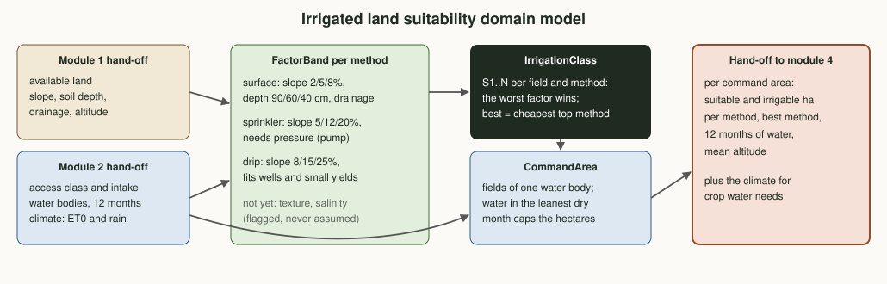
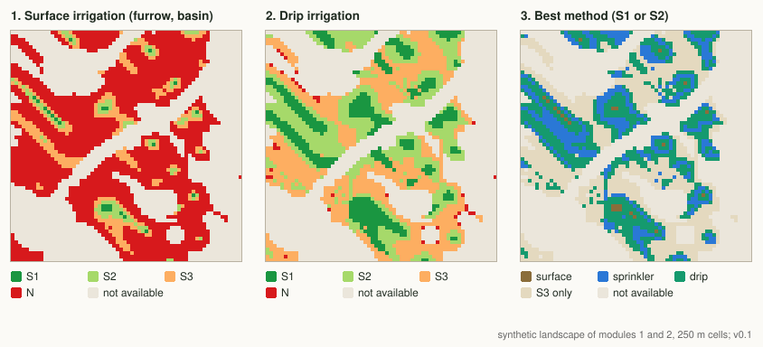

Plan · Phase 1 · Module 3Irrigated land suitability
Module 1 found the available land; module 2 found how each field can reach water. This module brings them together: which land can be irrigated well, by surface, sprinkler or drip, and how much of it the dry-season water can actually serve.
Where this sits in Phase 1
This module reads both earlier hand-off files: land from module 1, water from module 2. Its own hand-off, a list of command areas with their irrigable land and their water, is what module 4 uses to choose high-value crops.
Why a separate irrigation assessment
Analogy: land and water are the cook and the ingredients; the irrigation method is the kitchen that brings them together, and it has to fit the room. Furrows need flat, deep, well-drained land; a sprinkler needs pressure; drip fits steep plots and small water sources. Land that is good for rain-fed teff can be poor for furrows, and the other way round.
Method by method
Only 844 ha of the available land suit surface irrigation, mostly because of slope; 7,906 ha suit drip.
Water sets the ceiling
Of that land, the dry-season water can serve about 334 ha with drip, 206 ha with sprinkler and 130 ha with surface irrigation.
Efficiency is area
Drip loses about 10% of the water, furrows about 40%. With water as the limit, the more efficient method irrigates more land, not just the same land with less.
Domain model
Each irrigation method has its own requirements. The worst of slope, soil depth, drainage and water access gives the class. Fields served by one water body form a command area, and the water in its tightest dry-season month caps how many hectares it can irrigate.

Methods
| Factor (S1 / S2 / S3 limits) | Surface | Sprinkler | Drip |
|---|---|---|---|
| Slope, at most (%) | 2 / 5 / 8 | 5 / 12 / 20 | 8 / 15 / 25 |
| Soil depth, at least (cm) | 90 / 60 / 40 | 75 / 50 / 30 | 60 / 40 / 25 |
| Drainage class, at least (1 to 5) | 4 / 3 / 2 | 3.5 / 2.5 / 1.5 | 3 / 2 / 1.5 |
| Water access S1 | gravity | pumped (pressure) | gravity, pumped or wells |
| Water access S2 / S3 | pumped / wells | gravity or wells / - | - / harvest only |
| Application efficiency | 60% | 75% | 90% |
Class per field
Each factor gets S1 to N against the method's limits; the field takes the worst (the FAO limiting-factor rule used in stage 01). The best method for a field is the cheapest one that reaches its best class: surface, then sprinkler, then drip.
Command areas
Fields are grouped by the water body that serves them: all intakes of one stream basin, one spring, or one well site. A basin's supply is the flow at its outlet, so intakes never double count.
Water-limited hectares
A crop-neutral reference demand (Kc 1.0, November to April, net of effective rain) is divided by the method's efficiency. For streams and springs the tightest month decides; for wells, a year's recharge against the season.
What is not yet assessed
Soil texture and infiltration, and salinity or sodicity, are not in the hand-off yet. They are flagged as missing, never assumed suitable, and come with the field soil survey.
Amhara-specific considerations
Furrows on the valley floors
Traditional diversions and furrows work on flat valley land near streams. That land is limited, and on heavy Vertisols poor drainage lowers its class for surface irrigation.
Slopes and terraces
Much farmland is sloping. Drip and small sprinkler sets on terraces open land that furrows cannot reach, but they need investment and maintenance.
Household-scale irrigation
Motor pumps, hand-dug wells and small drip kits are spreading among smallholders; they fit the small command areas this module finds.
Shared water, shared rules
Intakes along one stream draw on one supply. Water-user associations allocate it; this module shows why their rules matter in the driest months.
Demo on the landscape of modules 1 and 2
The same made-up 16 km landscape, read from the two hand-off files. Reference demand peaks in March at 2,717 m³ per hectare for surface irrigation, 2,173 for sprinkler and 1,811 for drip. Synthetic data only.

Suitable land by method
Available land in S1 to N, per irrigation method.
Suitable land versus what the water serves
S1 plus S2 land, and the part the dry-season water can irrigate.
Try it: which method suits this field?
Describe a field. The same limits as assess_irrigation() give the class for each method and the cheapest method that reaches the best class.
Output: what module 4 receives
A list of command areas with their suitable and irrigable hectares per method, the best method, twelve months of water and the mean altitude, plus the monthly climate. Shallow-well sites are pooled into one record whose irrigable area is the sum of each site's own limit.
{
"source_id": "BASIN-13-00", "kind": "stream", "mean_altitude_m": 2037,
"best_method": "drip",
"suitable_ha": {"surface": 350.0, "sprinkler": 2118.8, "drip": 2775.0},
"irrigable_ha": {"surface": 61.8, "sprinkler": 77.3, "drip": 92.8},
"sustainable_m3": [258475, 193856, 168009, 193856, ...]
}From assets/handoff-irrigated-suitability.json (synthetic, v0.1).
What comes next
Validate
Compare the classes with existing small-scale schemes and household irrigation in the pilot woreda; agree limits with the regional irrigation office.
Complete the soils
Add texture, infiltration and salinity from the field soil survey so that no factor is left unassessed.
Module 4
High-value crop guidance: which crops pay best on these command areas with their water, and how to grow them.
Code on this branch
src/water_res/irrigation.py method requirements, classes, command areas, reference demand
src/demo_irrigation.py demo on the module 1 and 2 hand-offs (maps, JSON, hand-off)
tests/test_irrigation.py unit tests for every rulegit switch stage/02-water-resources
python3 src/demo_water_map.py # module 2 (writes its hand-off)
python3 src/demo_irrigation.py # module 3
python3 tests/test_irrigation.py